"Cutting It Off," a cartoon by the American artist Charles L. Bartholomew ("Bart") in the Minneapolis Journal, 12 November 1911: an outsider's view of the revolution. Public domain, Wikimedia Commons.
Q1 and Q3 story · Wuchang · October 1911
In October 1911 a Revolutionary's Bomb Went Off by Accident in Wuchang
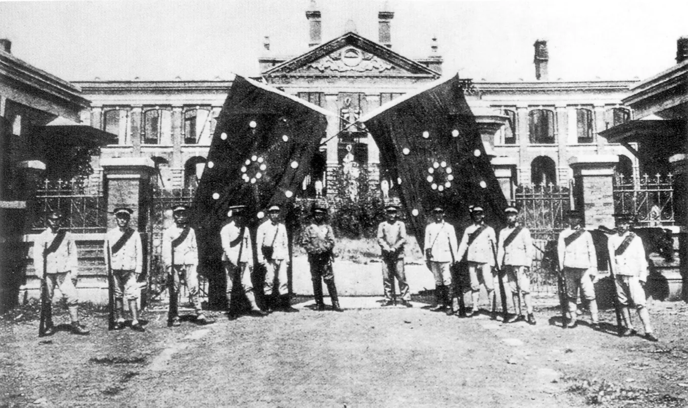
Soldiers guard the Hubei Military Government in Wuchang, its gate hung with the revolutionaries' eighteen-star flags, 1911. Public domain, Wikimedia Commons.
Revolutionaries in the Wuhan cities were making bombs for a rising.
On 9 October one went off by accident, and the police found their lists of members.
Soldiers of the New Army named on the lists rose the next night rather than wait to be executed.
Within a day they held Wuchang. How had the Qing come to this?
Sources: Ebrey, Ch. 24, p. 418; Joseph W. Esherick, Reform and Revolution in China (1976). Image: photographer unknown, 1911.
Recap · The Boxer Protocol · 1901
Recap: The Boxer Protocol Charged China 450 Million Taels
In 1900 Cixi declared war on eight foreign powers, and their armies took Beijing.
The Protocol of 1901 punished officials and let foreign troops guard the capital.
The court came home in 1902 to a treasury it could not fill.
Sources: Ebrey, Ch. 24, p. 416; Ch. 18 L4 for the Boxer war and the Protocol.
Q1 story · The fiscal crisis · 1901–1911
The Indemnity Came Due in 39 Yearly Installments, and the Court Squeezed the Provinces
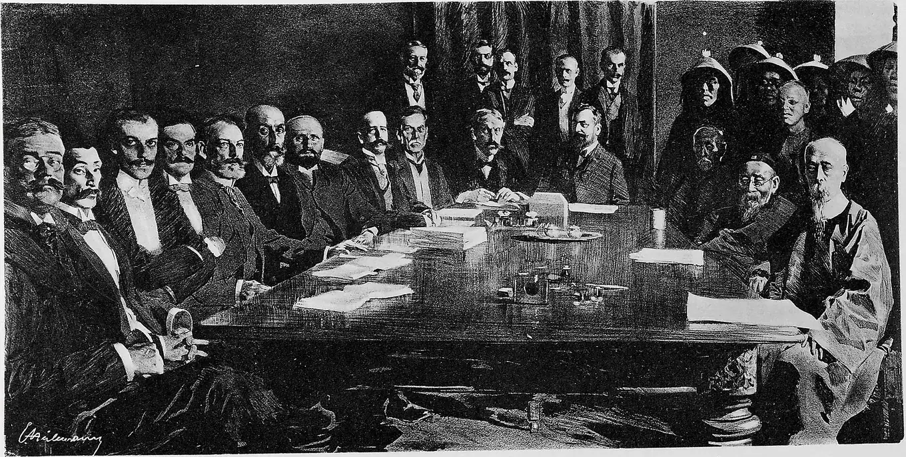
Foreign envoys and Qing officials at the signing of the Boxer Protocol, Beijing, 7 September 1901. Photograph probably by the German envoy Alfons Mumm von Schwarzenstein. Public domain, Wikimedia Commons.
China was to pay the 450 million taels over 39 years, with interest.
With older foreign loans, the debts swallowed all of the customs revenue.
Little was left to run the government, much less to modernize it.
The court pushed the costs onto the provinces, and they passed them on as new taxes.
Sources: Ebrey, Ch. 24, p. 416; Douglas R. Reynolds, China, 1898–1912 (1993). Image: Alfons Mumm von Schwarzenstein (attributed), 1901.
Q1 story · Local activism · 1901–1910
Local Elites Opened Schools, and Periodicals Rose Tenfold Between 1901 and 1910
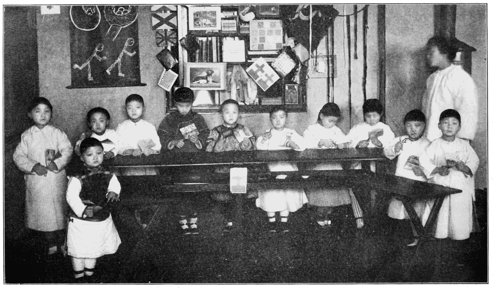
Girls and their teacher at a new school in Zhenjiang, photographed in 1905 for the American magazine Popular Science Monthly. Public domain, Wikimedia Commons.
With Beijing broke, local gentry and merchants paid for change themselves.
They founded new schools that taught science, geography, and foreign languages.
They started newspapers and magazines, which rose about tenfold between 1901 and 1910.
They also began to ask how other nations had grown rich and strong.
Sources: Ebrey, Ch. 24, p. 416. Image: Popular Science Monthly, vol. 67, 1905.
Q1 story · Nationalist protest · 1905–1907
In 1905 Merchants and Students Boycotted American Goods
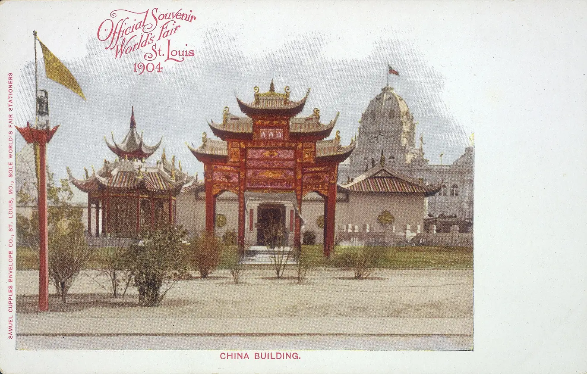
The China Building at the Louisiana Purchase Exposition, St Louis, 1904, on an official souvenir postcard. Public domain, Wikimedia Commons.
American law barred Chinese workers from entering the United States.
Chinese visitors to the 1904 St Louis World's Fair were harassed at the border and at the fair.
From 1905 to 1907, merchants and students refused to buy American goods.
Others raised money to buy back railways built by foreign firms.
Sources: Ebrey, Ch. 24, p. 416; Guanhua Wang, In Search of Justice: The 1905–1906 Chinese Anti-American Boycott (2001). Image: Samuel Cupples Envelope Co., 1904.
Q1 story · Court reform · 1901–1905
After 1901 the Court Ordered New Schools, and in 1905 It Abolished the Exams
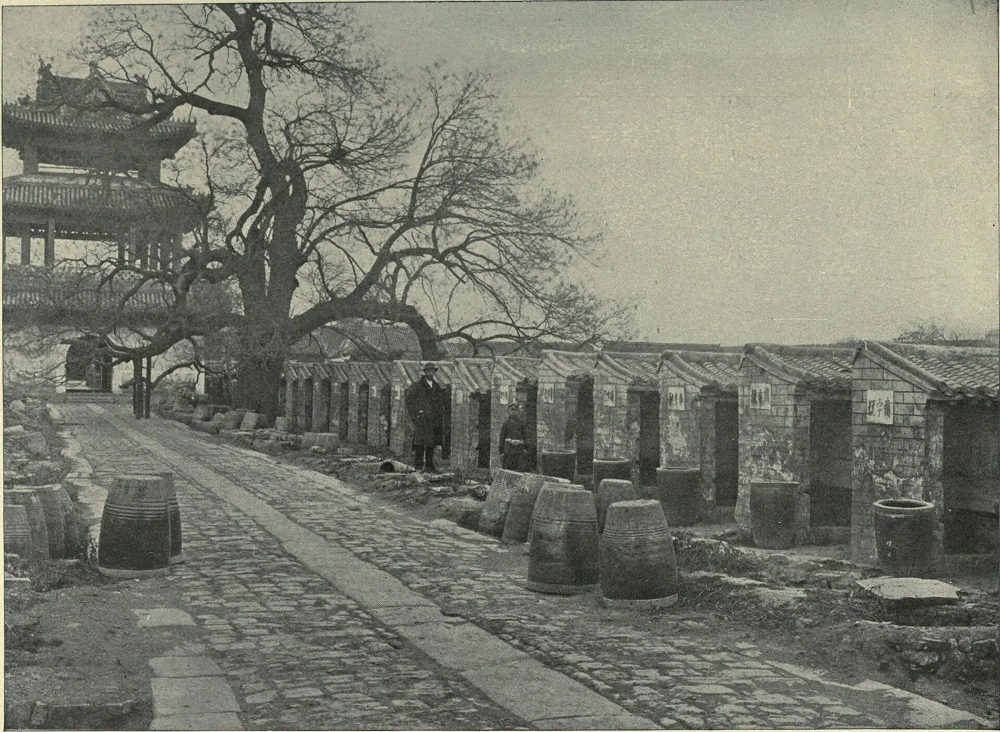
Rows of examination cells at the examination hall in Beijing, published in 1899. Candidates sat in cells like these for days at a time. Public domain, Wikimedia Commons.
In 1901 Cixi, once the enemy of reform, announced a national school system.
Questions on foreign government and science were added to the exams.
New military academies trained new armies with German or Japanese instructors.
Sources: Ebrey, Ch. 24, p. 418. Image: unknown photographer, published 1899.
Q1 concept · Constitutional monarchy
Concept: A Constitutional Monarchy Kept the Throne but Shared Power with an Elected Assembly
Concept
Constitutional monarchy
A form of government in which a hereditary monarch remains head of state, but a written constitution sets the rules and an elected assembly shares in making laws.
In Britain the constitution grew from Parliament and custom.
In Japan the emperor granted the constitution himself in 1889, and his powers stayed large.
In November 1908 the Emperor Died, Cixi a Day Later, and a Two-Year-Old Took the Throne
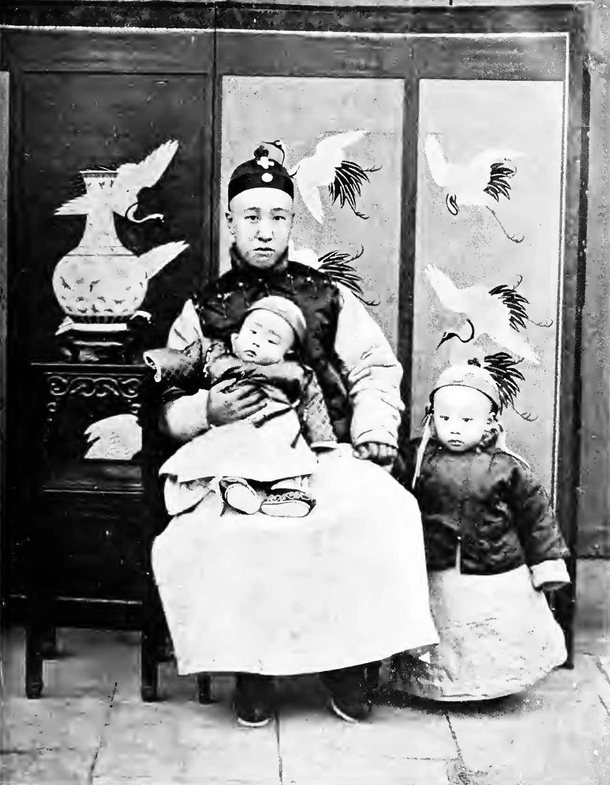
Prince Chun (Zaifeng), the regent, with his sons Puyi, the new emperor (standing), and Pujie, 1909. Public domain, Wikimedia Commons.
On 14 November 1908 the Guangxu emperor died at 37; Cixi died the next day.
She had named his two-year-old nephew, Puyi, as the next emperor.
The boy's father, Prince Chun, ruled as regent.
The regents soon dismissed Yuan Shikai, the most powerful general.
Names in This Story
Guangxuemperor 1875–1908
Puyithe last emperor, 1906–1967; pronounced "poo-yee"
Prince Chun (Zaifeng)Puyi's father and regent, 1908–1911
Sources: Ebrey, Ch. 24, p. 418; Edward J. M. Rhoads, Manchus and Han (2000). Image: unknown photographer, 1909.
Q1 story · The provinces · 1909–1910
In 1909 Provincial Assemblies Met, Chosen by Fewer Than 1 Percent of the People
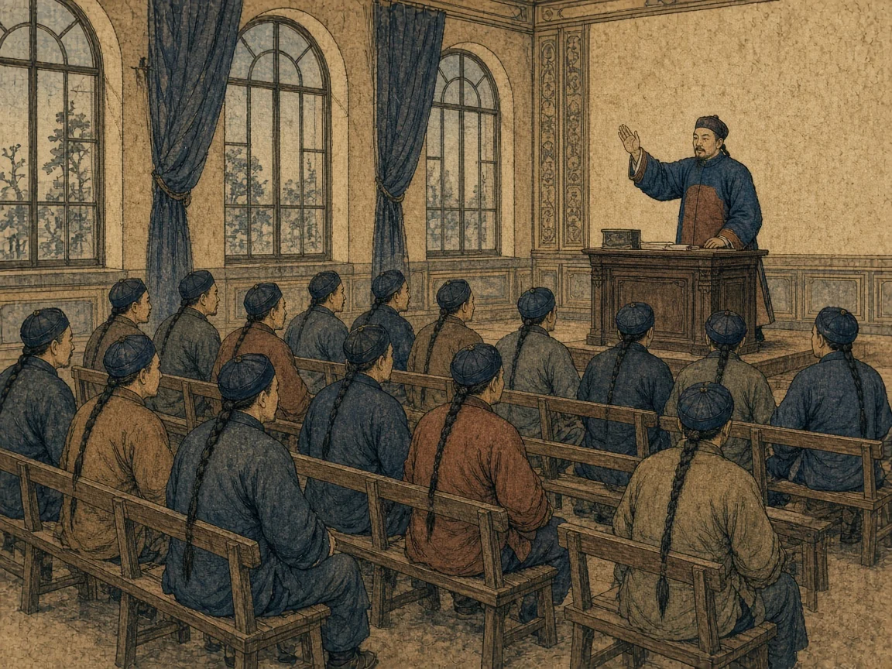
AI-generated illustration in a woodblock-print style, made for this deck: members of a provincial assembly in 1909, men in long gowns and Qing caps, sit on benches in a new Western-style hall while one delegate speaks from a raised desk. An interpretation, not a historical source.
In 1909 each province elected an assembly; fewer than 1 percent of the people could vote.
The voters were men with property or degrees, the same local elites who ran the new schools.
The assemblies sent three petitions for a parliament now; the last claimed 25 million signatures.
In 1910 a national assembly met: 100 members elected, 100 named by the court.
Sources: Ebrey, Ch. 24, p. 418. Image: AI-generated illustration made for this deck.
Q1 story · Beijing · May 1911
Petitions Asked for a Parliament, and in 1911 the Court Named a Cabinet of Eight Manchus
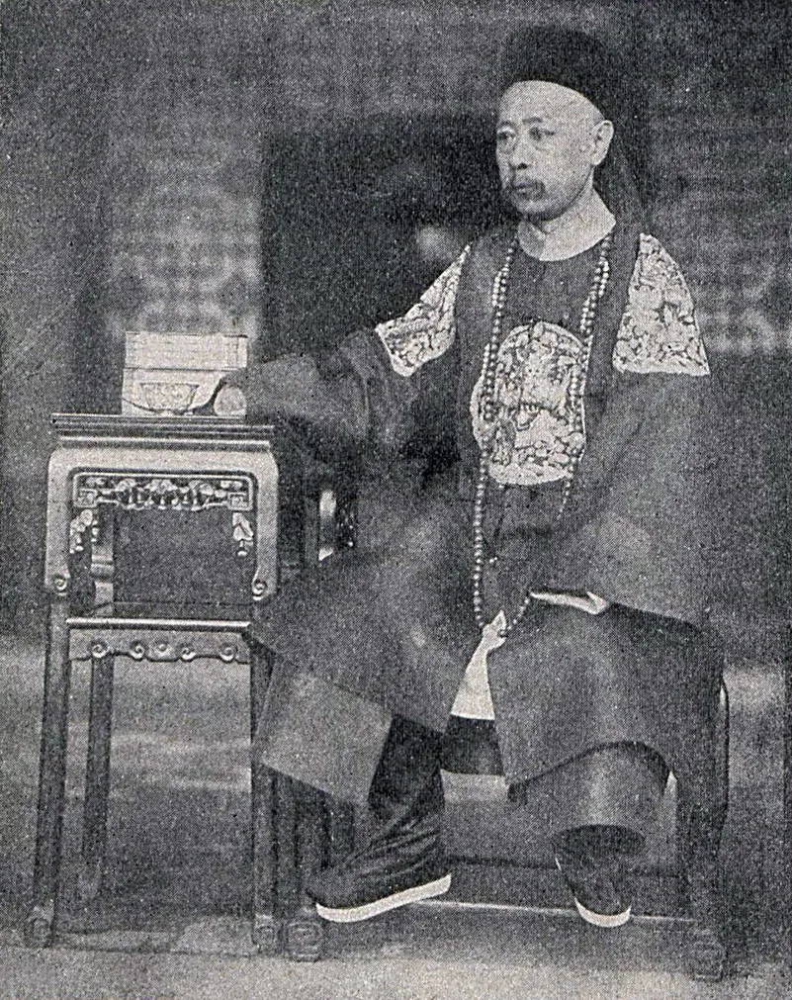
Yikuang, Prince Qing, the Manchu prince who headed the new cabinet of 1911, photographed about 1901. Public domain, Wikimedia Commons.
In May 1911 the court named its first cabinet, as a constitution required.
Of its thirteen ministers, eight were Manchus, one a Mongol, and only four Chinese.
Critics called it the "princes' cabinet," and anti-Manchu anger rose.
8
Manchu ministers
1
Mongol minister
4
Chinese ministers
Sources: Ebrey, Ch. 24, p. 418; Rhoads, Manchus and Han (2000). Image: published by Joseph Kürschner, 1901.
Reading Guide · Review Question 1
Reading Guide · Review Question 1
Review Question 1
Qing Reforms and the End of Monarchy: How did the fiscal crisis following the Boxer Protocol spur both local elite activism and the Qing court's desperate, ultimately doomed reform efforts?
By 1906 Some 10,000 Chinese Students Were Studying in Tokyo
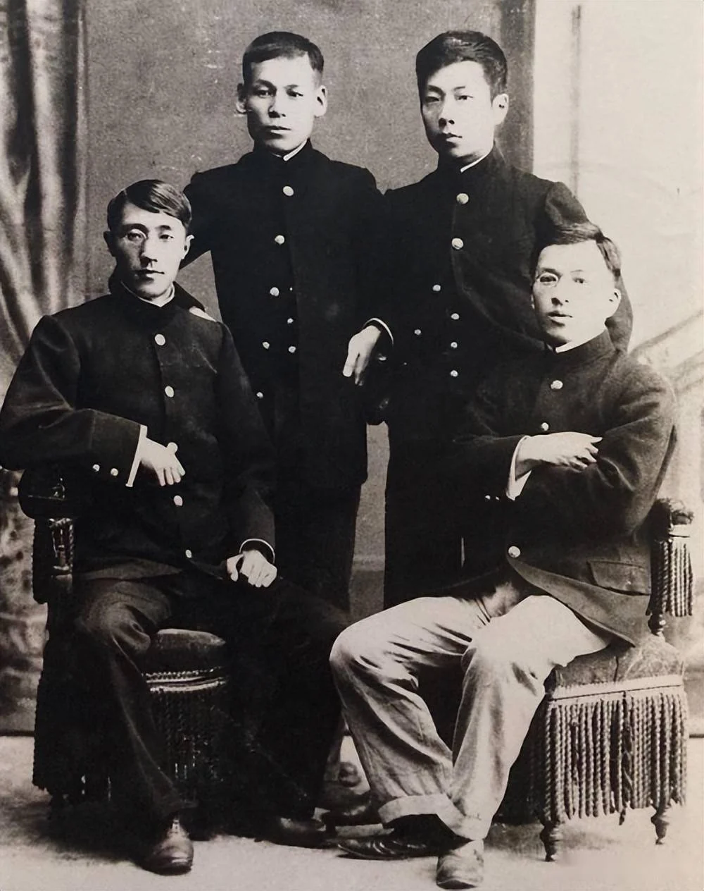
Chinese students in Tokyo, 1903. The young man standing at the right in the back row is Zhou Shuren, later famous as the writer Lu Xun. Public domain, Wikimedia Commons.
After 1905, a Japanese school was the new road to a career.
By 1906, ten thousand of the thirteen thousand Chinese students abroad were in Japan.
Living abroad, they felt China's weakness as a personal shame.
They formed clubs and papers to ask how Japan had modernized so fast.
Sources: Ebrey, Ch. 24, p. 416; Reynolds, China, 1898–1912 (1993), p. 62. Image: unknown photographer, Tokyo, 1903.
Q2 story · Translating the West · 1898–1909
Yan Fu Said the West's Strength Came from Freeing the Individual
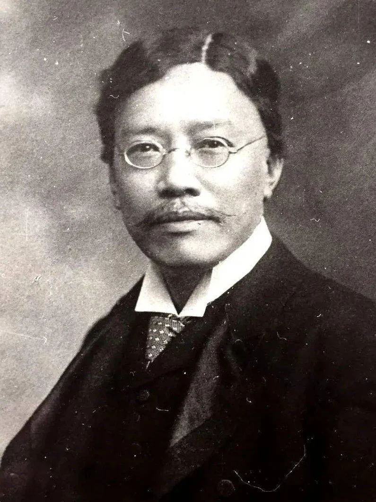
Yan Fu (1854–1921), photographed in 1907. Public domain, Wikimedia Commons.
Yan Fu studied at a British naval college in the 1870s, one of the first Chinese to study in England.
He translated Mill's On Liberty (1903) and Montesquieu's The Spirit of Laws (1909).
Western governments, he argued, freed individual energy and channeled it toward national goals.
Only 30 percent of China's troubles, he said, came from foreigners; the rest were its own fault.
Sources: Ebrey, Ch. 24, p. 416; Benjamin Schwartz, In Search of Wealth and Power: Yen Fu and the West (1964). Image: unknown photographer, 1907.
Q2 concept · Social Darwinism
Concept: Social Darwinism Taught That Nations Fought to Survive and the Weak Would Perish
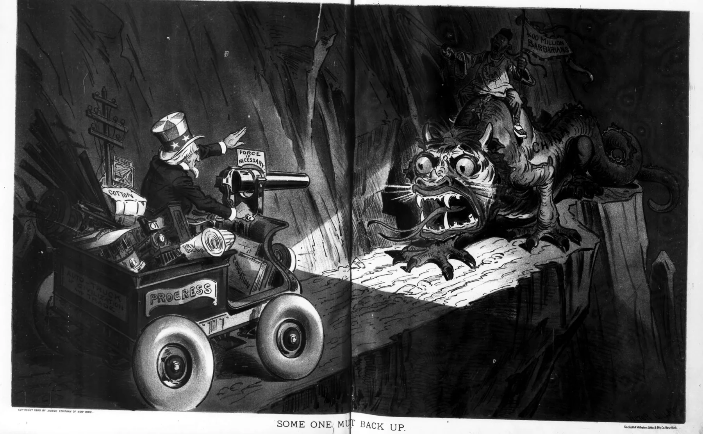
1 · "Some One Must Back Up," Victor Gillam, Judge (New York), 8 December 1900. A racist cartoon: Uncle Sam's cart of "Progress" faces a Boxer riding a China dragon under the banner "400 Million Barbarians." Public domain; Internet Archive microfilm (the original was in color).
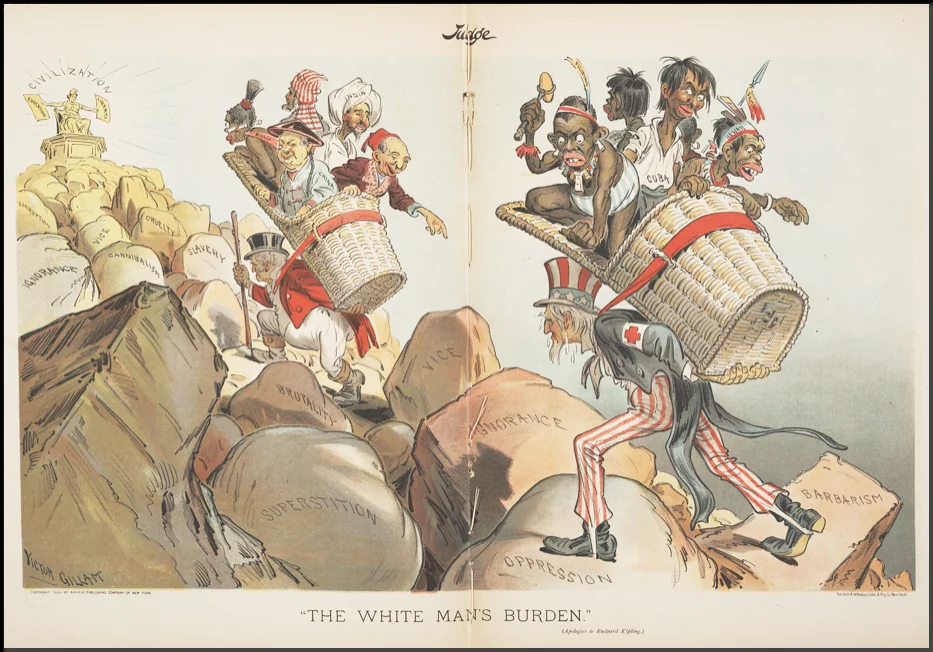
2 · "The White Man's Burden," Victor Gillam, Judge (New York), 1 April 1899. A racist cartoon: Britain and the United States carry caricatured colonized peoples, China among them, uphill toward "Civilization." Public domain, Wikimedia Commons.
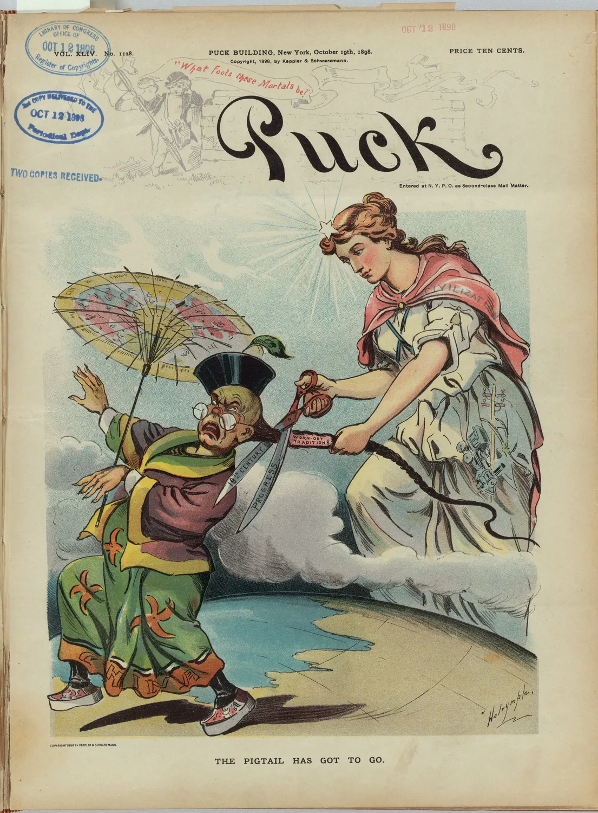
3 · "The Pigtail Has Got to Go," Louis Dalrymple, Puck (New York), 19 October 1898. A racist cartoon: "Civilization" takes scissors to China's queue. Public domain, Library of Congress.
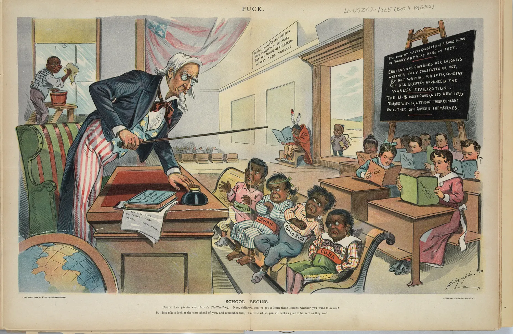
4 · "School Begins," Louis Dalrymple, Puck (New York), 25 January 1899. A racist cartoon: Uncle Sam lectures colonized peoples drawn as unruly children while a Chinese boy waits at the door. Public domain, Library of Congress.
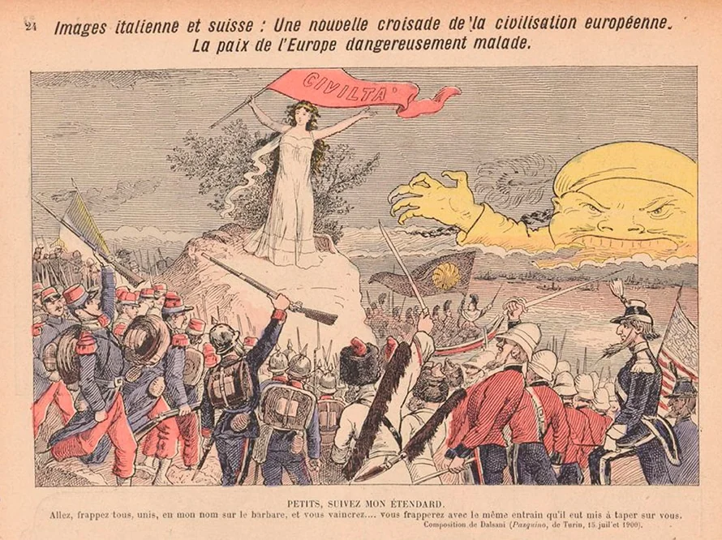
5 · "Youth, Take Up My Flag," Dalsani, Pasquino (Turin), 15 July 1900, reprinted under the heading "A New Crusade of European Civilization." A racist "Yellow Peril" cartoon. Scan: Bibliothèque nationale de France, via MIT Visualizing Cultures.
1 / 5
Concept
Social Darwinism
The idea, drawn loosely from Darwin's theory of evolution, that nations and races compete for survival like species, so that the strong win and the weak are conquered or die out.
Yan Fu's On Evolution (1898) made "survival of the fittest" famous in China.
Students read China's plight as a race to avoid extinction.
Western cartoons rarely named Darwin, but drew the same ranking of races.
Their "civilizing mission" said the strong had a right, even a duty, to rule the weak.
Sources: Ebrey, Ch. 24, p. 417; Schwartz, In Search of Wealth and Power (1964). Images: Judge, Puck and Pasquino, 1898–1900.
Q2 story · Liang Qichao · 1903
Liang Qichao Toured America in 1903 and Came Home Wanting a Strong State First
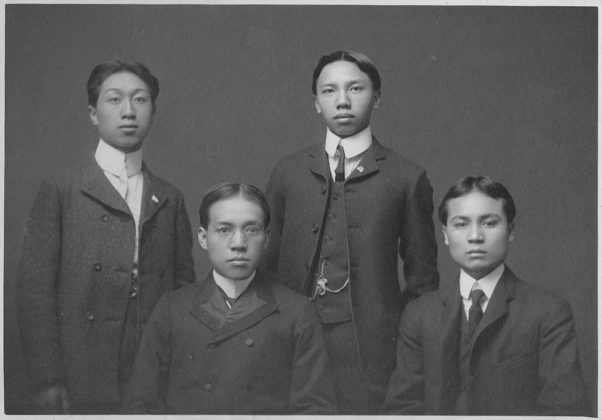
Liang Qichao (seated, left) with his brother Liang Qixun and two other men in Portland, Oregon, September 1903, during his tour of North America. Public domain, Wikimedia Commons.
In exile in Japan, Liang wrote that China could grow strong through "democracy" · Ch. 18 L4 · Liang ↗
By "democracy" he meant a government that drew its strength from the people.
In 1903 he toured the United States and disliked what he saw of its politics.
He came home preferring the strong states and constitutional monarchies of Japan and Germany.
Sources: Ebrey, Ch. 24, pp. 416–417; Hao Chang, Liang Ch'i-ch'ao and Intellectual Transition in China (1971). Image: unknown photographer, 1903.
Q2 story · Shanghai · 1903
An Eighteen-Year-Old, Zou Rong, Called for Wiping Out the Manchus
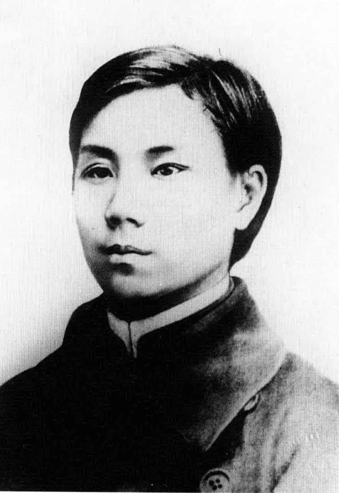
Zou Rong (1885–1905), photographed about 1903. Public domain, Wikimedia Commons.
In 1903 Zou Rong, back from Japan, published The Revolutionary Army in Shanghai.
It called for an army to "wipe out the five million barbarian Manchus."
It praised the "sacred Han race, descendants of the Yellow Emperor."
Arrested in the foreign settlement, he died in prison in 1905, aged twenty.
Sources: Ebrey, Ch. 24, p. 417; Michael Gasster, in The Cambridge History of China, vol. 11, pt. 2 (1980), p. 482; Rhoads, Manchus and Han (2000). Image: unknown photographer.
Reading Guide · Review Question 2
Reading Guide · Review Question 2
Review Question 2
Intellectual Responses and Early Nationalism: Analyze how early twentieth-century Chinese intellectuals interpreted Western power and Japanese modernization. How did figures like Yan Fu, Liang Qichao, and Zou Rong diagnose China's weaknesses?
Sun Yatsen Grew Up in Hawaii and Trained as a Doctor in Hong Kong
Sun Yatsen (1866–1925) in a studio portrait of 1911 by the K. T. Thompson studio, Shanghai, taken when he was forty-five. Public domain, Wikimedia Commons.
Sun was born in 1866 in Guangdong, to a farming family, not a family of scholars.
At thirteen he joined his elder brother in Hawaii and went to a mission school.
He studied Western medicine in Hong Kong and finished in 1892.
There he and his friends began to talk about a republic.
Sources: Ebrey, Ch. 24, p. 417; Marie-Claire Bergère, Sun Yat-sen (1998). Image: K. T. Thompson studio, Shanghai, 1911.
Q3 story · Revive China Society · 1894–1896
Sun Founded the Revive China Society, Cut His Queue, and Turned to the Secret Societies
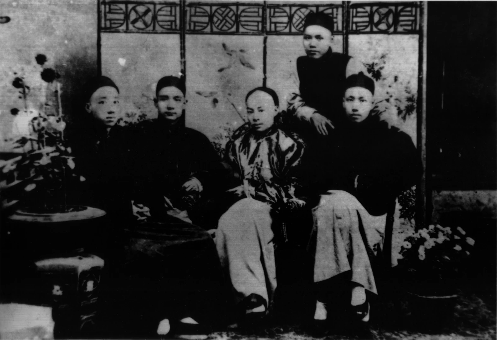
Sun Yatsen (seated, second from left) and friends at the Hong Kong medical college, about 1888. They called themselves the "Four Bandits" for their talk of overthrowing the Qing. Public domain, Wikimedia Commons.
Like Hong Xiuquan, he looked for followers outside the elite · Ch. 18 L2 · Taiping ↗
Sources: Ebrey, Ch. 24, pp. 417–418; Bergère, Sun Yat-sen (1998). Image: unknown photographer, Hong Kong.
Q3 story · Tokyo · 1905
In Tokyo in 1905, Students Joined Sun's Revolutionary Alliance
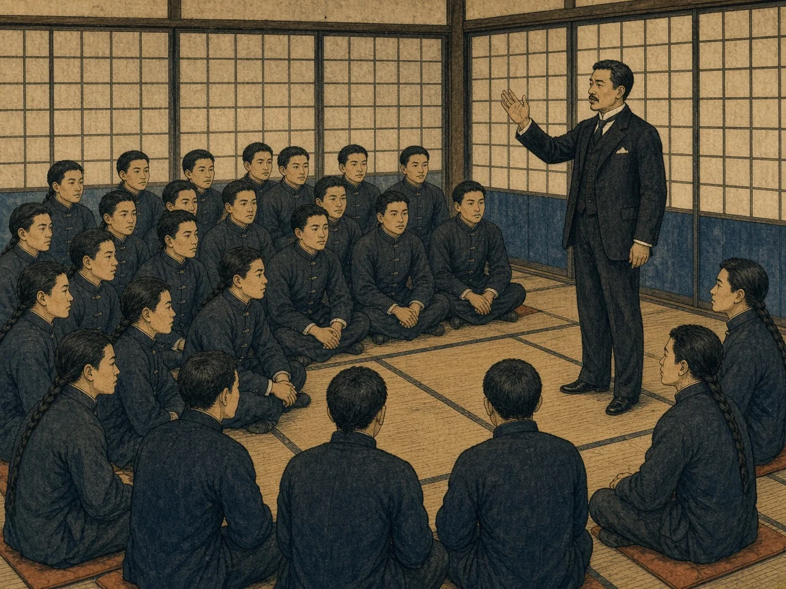
AI-generated illustration in a woodblock-print style, made for this deck: Chinese students in Tokyo in 1905, many with their queues cut and wearing Japanese student uniforms, crowd a tatami room to hear Sun Yatsen, in a Western suit, speak. An interpretation, not a historical source.
In London in 1896 Sun saw Westerners criticizing their own societies and arguing for socialism.
He began to think China could skip ahead to a more progressive government.
In Tokyo in 1905, with Japanese help, he joined radical students to found the Revolutionary Alliance.
Students from educated families now followed a doctor from a farming village.
Sources: Ebrey, Ch. 24, p. 418; Bergère, Sun Yat-sen (1998). Image: AI-generated illustration made for this deck.
Q3 concept · The Three People's Principles
Concept: The Three People's Principles — Nationalism, Democracy, the People's Livelihood
Concept
The Three People's Principles
Sun Yatsen's program: nationalism (an end to Manchu rule and foreign domination), democracy (elections and a constitution), and the people's livelihood (a mild socialism that would equalize land and limit capital).
Nationalism opposed both the Manchus and the foreign powers.
Democracy meant elections and a constitution.
The people's livelihood was, in Ebrey's words, "a vague sort of socialism."
Sources: Ebrey, Ch. 24, p. 418.
Q3 concept · Political tutelage
Concept: Political Tutelage Meant the Party Would Rule Until the People Were Ready
Concept
Political tutelage
A period of guided rule in which the revolutionary party would govern under a provisional constitution while teaching the people to vote, starting with local elections, before full democracy began.
Sun admitted most Chinese had no experience of politics.
So the revolutionaries would rule first, under a temporary constitution.
People would learn democracy by electing local officials.
Sources: Ebrey, Ch. 24, p. 418.
Q3 story · Southeast Asia and beyond · 1905–1911
Seven or Eight Uprisings Failed, and Sun Raised Money from Overseas Chinese
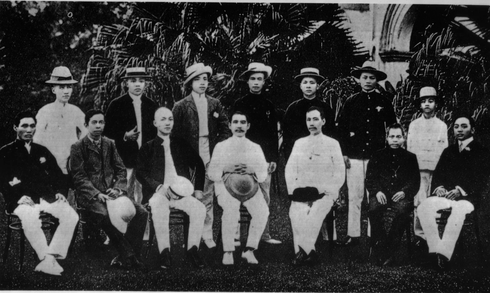
Sun Yatsen (front row, center) with members of the Singapore branch of the Revolutionary Alliance, March 1907. Public domain, Wikimedia Commons.
The Alliance sponsored seven or eight risings in south China; all failed.
Sun spent most of these years abroad, looking for money and foreign backers.
Overseas Chinese merchants and workers in Southeast Asia and America paid for the plots.
Inside China, revolutionaries quietly recruited soldiers in the New Army.
Sources: Ebrey, Ch. 24, p. 418; Bergère, Sun Yat-sen (1998). Image: unknown photographer, Singapore, 1907.
Reading Guide · Review Question 3
Reading Guide · Review Question 3
Review Question 3
Sun Yatsen and Revolutionary Ideology: Evaluate the political strategies and ideological framework developed by Sun Yatsen to overthrow the Qing Dynasty.
Sources: Edward J. M. Rhoads, Manchus and Han (2000), ch. 4; Esherick, Reform and Revolution in China (1976); Ebrey, Ch. 24, pp. 417, 419.
Story · Beijing · February 1912
In February 1912 the Boy Emperor Abdicated, and Two Thousand Years of Monarchy Ended
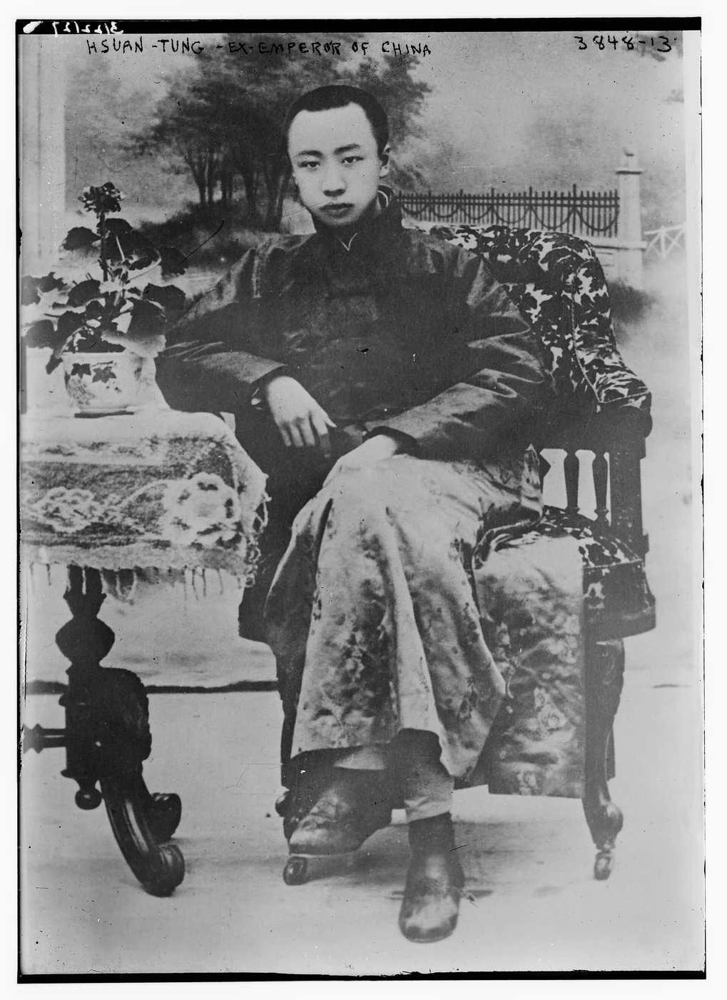
Puyi, the former emperor, photographed years after his abdication in 1912 at age six; the Library of Congress dates the negative to about 1915–1920, when he was roughly nine to fourteen. Bain News Service. Library of Congress. Public domain, Wikimedia Commons.
On 1 January 1912 Sun Yatsen became provisional president of a republic at Nanjing.
The court called back Yuan Shikai, and he bargained with both sides.
On 12 February 1912 the court issued the abdication; in March, Yuan became president.
Men cut off their queues, and soldiers forced others to.
Sources: Ebrey, Ch. 24, p. 419; Rhoads, Manchus and Han (2000). Image: Bain News Service, about 1915–1920.
Coming up · Lecture 2
Next: The General Who Made the Deal Wanted Power for Himself
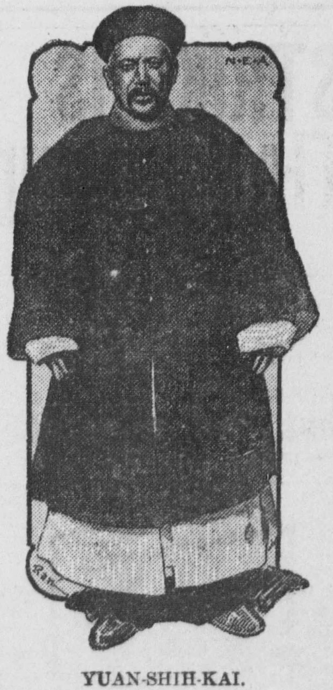
Yuan Shikai (1859–1916), commander of the Qing army, as pictured in 1904. Public domain, Wikimedia Commons.
Yuan had built the Qing's best army, and its officers were loyal to him.
In 1912 he became president of the new republic.
Would he share power with an elected parliament? · Ch. 24 L2 ↗
Sources: Ebrey, Ch. 24, pp. 418–419. Image: published 1904.
Pierian Spring · Independent Study
Today's lecture ends here. Continue on your own: the stories below finish this chapter's history.
"A little learning is a dang'rous thing; Drink deep, or taste not the Pierian spring."Alexander Pope, An Essay on Criticism, 1711
Pierian Spring · Story · Reformers in exile · 1899–1911
Kang and Liang Wrote from Exile in Japan, and Liang Explained "Democracy"
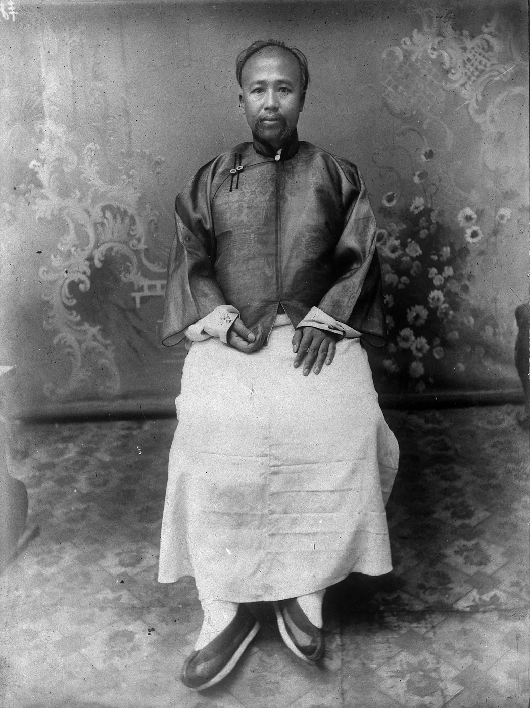
Kang Youwei in exile, photographed about 1905 during his travels in the United States. Los Angeles Times Photographic Archive, UCLA Library. CC BY 4.0, Wikimedia Commons.
After 1898, with prices on their heads, Kang and Liang settled in Japan.
In 1899 they founded the Protect the Emperor Society, with branches across the Chinese diaspora.
Liang's magazines, printed in Japan, were smuggled into China and read everywhere.
Reformers and Sun's revolutionaries competed for the same overseas Chinese money.
Sources: Ebrey, Ch. 24, p. 416; L. Eve Armentrout Ma, Revolutionaries, Monarchists, and Chinatowns (1990); Hao Chang (1971). Image: Los Angeles Times, about 1905.
Pierian Spring · Story · The Northern Army · 1901–1909
Yuan Shikai Built the Strongest Army in China
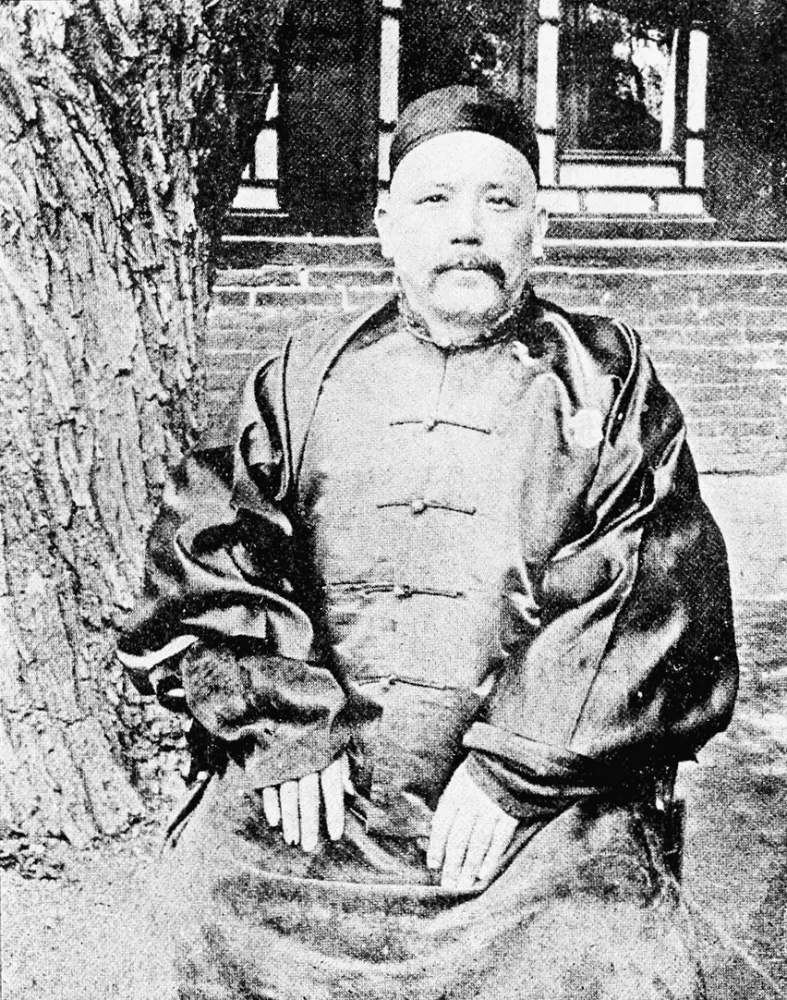
Yuan Shikai as governor-general of Zhili, published in Popular Science Monthly in 1905–06 with the caption "chief educational reformist." Public domain, Wikimedia Commons.
After Li Hongzhang died in 1901, Yuan became the most powerful general in China.
He commanded the Northern Army and headed the Baoding Military Academy.
As governor-general, he also reformed schools, police, and commerce.
His officers owed their careers to him, not to the throne.
Sources: Ebrey, Ch. 24, pp. 418–419; Stephen R. MacKinnon, Power and Politics in Late Imperial China (1980). Image: Popular Science Monthly, 1905–06.
Pierian Spring · Story · The Forbidden City · 1912–1924
The Abdication Terms Let the Boy Emperor Keep His Palace and His Title
Under the Articles of Favorable Treatment, Puyi kept the title of emperor.
He stayed in the inner Forbidden City with a yearly allowance of four million dollars.
Separate articles promised Manchus, Mongols, Muslims, and Tibetans equal rights.
Puyi lived in the palace until 1924, when a warlord's soldiers expelled him.
Sources: Ebrey, Ch. 24, p. 419; Rhoads, Manchus and Han (2000).
Sources and image credits
The Stories in This Deck Rest on These Sources
Main source
Patricia Buckley Ebrey, A History of China, Chapter 24, "Remaking China (1900–1927)," pp. 416–419. All page references in this deck are to these pages.
Zou Rong, The Revolutionary Army (1903), in Michael Gasster, "The Republican Revolutionary Movement," The Cambridge History of China, vol. 11, pt. 2 (1980), p. 482, as quoted in Ebrey, p. 417 (slide r). Student newspaper in Douglas R. Reynolds, China, 1898–1912: The Xinzheng Revolution and Japan (1993), p. 62, as quoted in Ebrey, p. 416 (slide n).
Further reading beyond Ebrey
Edward J. M. Rhoads, Manchus and Han: Ethnic Relations and Political Power in Late Qing and Early Republican China, 1861–1928 (2000), especially ch. 4, "The 1911 Revolution" (slides j, l, r, bb, cc, hh).
Joseph W. Esherick, Reform and Revolution in China: The 1911 Revolution in Hunan and Hubei (1976) (slides b, aa, bb).
Douglas R. Reynolds, China, 1898–1912 (1993) (slides d, n).
Guanhua Wang, In Search of Justice: The 1905–1906 Chinese Anti-American Boycott (2001) (slide f).
Benjamin Schwartz, In Search of Wealth and Power: Yen Fu and the West (1964) (slides o, p).
Ellen Sebring, "Civilization & Barbarism: Cartoon Commentary & 'The White Man's Burden' (1898–1902)," MIT Visualizing Cultures, 2014 (slide p).
Hao Chang, Liang Ch'i-ch'ao and Intellectual Transition in China, 1890–1907 (1971) (slides q, ff).
Marie-Claire Bergère, Sun Yat-sen, trans. Janet Lloyd (1998) (slides t–y).
L. Eve Armentrout Ma, Revolutionaries, Monarchists, and Chinatowns (1990) (slide ff).
Stephen R. MacKinnon, Power and Politics in Late Imperial China: Yuan Shi-kai in Beijing and Tianjin, 1901–1908 (1980) (slide gg).
Images (real unless marked AI; via Wikimedia Commons unless noted)
a: Charles L. Bartholomew, "Cutting It Off," Minneapolis Journal, 12 November 1911. Public domain.
b: The Hubei Military Government, Wuchang, 1911. Public domain.
d: The signing of the Boxer Protocol, 7 September 1901, attributed to Alfons Mumm von Schwarzenstein. Public domain.
e, gg: Popular Science Monthly, vols. 67–68 (1905–06). Public domain.
f: Samuel Cupples Envelope Co., souvenir postcard of the China Building, St Louis, 1904. Public domain.
g: The examination hall, Beijing, published 1899. Public domain.
j: Prince Chun with Puyi and Pujie, 1909, from China Under the Empress Dowager (1914 ed.). Public domain.
k, v: AI-generated illustrations made for this deck (2026); not historical sources.
l: Yikuang, Prince Qing, published by Joseph Kürschner, 1901. Public domain.
n: Lu Xun and fellow students, Tokyo, 1903. Public domain.
o, r: Yan Fu, 1907; Zou Rong, about 1903. Public domain.
p (five cartoons, all racist): Victor Gillam, Judge, 1900 and 1899; Louis Dalrymple, Puck, 1898 and 1899 (Library of Congress); Dalsani, Pasquino, 1900 (BnF scan via MIT Visualizing Cultures). Public domain.
q: Liang Qichao in Portland, Oregon, 1903. Public domain.
t: K. T. Thompson studio, Shanghai, Sun Yatsen, 1911. Public domain.
u, y: The "Four Bandits," Hong Kong, about 1888; the Singapore branch of the Revolutionary Alliance, 1907. Public domain.
aa: Revolutionary troops at Hankou, 1911. Public domain.
cc: Bain News Service, "Hsuan-Tung, Ex-Emperor of China," about 1915–1920. Library of Congress. Public domain.
dd: Yuan Shikai, 1904. Public domain.
ff: Kang Youwei, about 1905. Los Angeles Times Photographic Archive, UCLA Library. CC BY 4.0.